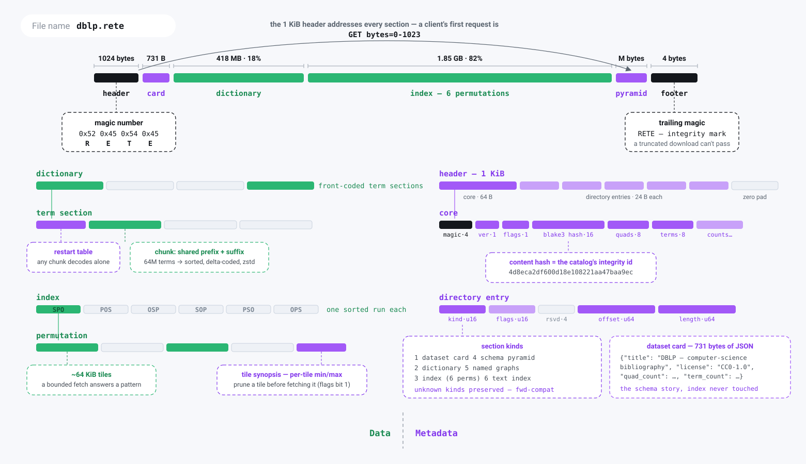

Rete — a cloud-native, range-queryable RDF graph file
Status: Stable format generation 1, implemented (header byte 0x05; Rete 1.x compatibility baseline) · File extension: .rete · Header magic: RETE
One file. Put it on S3, GitHub, or any HTTP server that honors
Range. Give a client the URL. Run SPARQL. No database server.Like Parquet for tables and PMTiles for maps — but for RDF graphs, with a pyramid of progressively-refined detail.
1. Goals & non-goals
Goals
- Single immutable file, queryable in place over HTTP
Rangerequests. - Bounded request count to answer a query — the client reads a small header (which carries every section's byte range), then fetches only the sections a query actually touches (≤4 ranges for a full open; 3 for the overview path).
- SPARQL evaluation against the file (BGPs, joins, filters, paths, aggregates, named graphs, and the supported query forms in §8).
- Progressive / pyramidal access: a coarse summary graph loads first, and the client refines by "zooming into" regions of interest.
- WASM-friendly: the same query core runs in a browser and in a CLI.
- RDF-faithful: IRIs, blank nodes, literals (with datatype + language tag), and named graphs (quads).
Non-goals
- Mutation. The file is build-once / read-many; this buys aggressive
compression and CDN caching. Updates happen around the file, not in it:
rete serveaccepts SPARQL Update into an append-only journal beside the base and publishes the merged state as a fresh.retesnapshot (see cli); an in-file overlay section remains future work. - Full SPARQL 1.1 on day one. We stage it (see §8).
- Inference / reasoning at query time. Materialize before build if wanted.
2. Prior art we build on
| Source | What we take |
|---|---|
| HDT (Header-Dictionary-Triples) | Dictionary + bitmap-encoded triples; the closest existing queryable single-file RDF format. We extend it toward range/progressive access. |
| PMTiles | Header → root directory → leaf directories → data, all byte-range addressable, with a bounded number of requests. This is the spine of our pyramid + index. |
| Parquet | Footer metadata, blocks ("row groups"), and per-block min/max "zone maps" enabling pushdown / block-skipping. |
| FlatGeobuf | Packed static index (R-tree) co-located in the file for streamable spatial queries; our analog indexes graph locality. |
Oxigraph (oxrdf, spargebra, oxttl) | Reuse RDF model, SPARQL parser, and algebra rather than writing our own. |
3. Conceptual model
An RDF dataset = a set of quads (subject, predicate, object, graph).
Three transformations make it range-queryable:
- Dictionary encoding — every IRI / literal / blank node ⇒ a dense integer ID. Triples become integer triples; the dictionary is stored once, compressed.
- Permutation indexes — store the integer triples sorted in all six orders (SPO, POS, OSP, SOP, PSO, OPS) so any triple pattern resolves to a contiguous scan with its bound components leading.
- Pyramid (community summarization) — partition nodes into a hierarchy of communities. Level 0 is a quotient graph (communities as supernodes, with aggregated edges). Each deeper level expands supernodes into their members.
4. File layout
The stable generation-1 on-disk layout (what write_file/write_dataset
actually emit). The
header is the directory: it carries the absolute offset+length of every section, so a
client finds everything from the first 1 KB read — no separate directory or
metadata block to chase.


The layout on a real specimen (dblp.rete, 179 M triples): the dictionary and the six permutation indexes carry nearly all the bytes; everything a reader needs to route a query — header, directory, card — fits in the first two range requests.
The header is the directory: a single 1 KB read carries the offset and length of every section. The ASCII below is the precise reference.
┌──────────────────────────────────────────────────────────────┐
│ HEADER fixed-size, 1024 bytes, read first. │
│ A typed section directory: the offset+length of every │
│ section below, plus codec ids, counts, content hash (§4.1). │
├──────────────────────────────────────────────────────────────┤
│ DICTIONARY front-coded container of four sections: │
│ ├ shared (terms used as both subject & object) │
│ ├ subjects-only │
│ ├ objects-only (incl. literals) │
│ └ predicates (graph IRIs live in NAMED GRAPHS) │
├──────────────────────────────────────────────────────────────┤
│ INDEX default-graph permutation container: │
│ SPO/POS/OSP/SOP/PSO/OPS streams, each a zone-mapped, │
│ delta-coded, (optionally zstd) block. Via `root_dir_offset`. │
├──────────────────────────────────────────────────────────────┤
│ PYRAMID META summary superedges (community quotient graph)│
│ + optional per-community tiles. Pointed to by pyramid fields.│
├──────────────────────────────────────────────────────────────┤
│ NAMED GRAPHS optional: (graph IRI, permutation container) │
│ per named graph, sharing the dictionary. Quads only. │
├──────────────────────────────────────────────────────────────┤
│ FOOTER 4-byte `RETE` magic — a format/integrity │
│ sentinel (the directory is the header). │
└──────────────────────────────────────────────────────────────┘
Each permutation section carries its own tile directory (format 0x02,
§6.2): byte ranges for independently-compressed tiles, keyed by leading-id
range — so single-pattern routing fetches the selected permutation section (one
of the six) and decompresses only the matching tile(s). Per-community leaf directories
(mapping (level, tile, perm) to byte ranges across the pyramid) are part of
the fuller design and remain future work (see docs/BENCHMARK.md).
4.1 Header (1024 bytes, little-endian)
The header is a fixed 64-byte core followed by a typed section directory —
up to 40 entries of 24 bytes each (kind, flags, offset, length) — zero-padded to
1024. A new top-level section is added as a new directory entry, so the header has
room to grow without a layout reshape. Format byte 0x05 is stable format
generation 1, introduced by Rete 1.0.0. It uses six index permutations and this
1024-byte section-directory header. Experimental formats 0x01 through 0x04
are not readable and must be rebuilt from RDF source.
Core (bytes 0..64):
| Offset | Size | Field |
|---|---|---|
| 0 | 4 | magic RETE |
| 4 | 1 | format version (0x05, stable generation 1) |
| 5 | 1 | flags (bit0: has named graphs/quads; bit1: tile-synopsis trailer; bit2: contains RDF-star quoted triples) |
| 6 | 2 | header length (= 1024) |
| 8 | 16 | content hash (blake3, first 16 bytes) — also an ETag-like id |
| 24 | 8 | total quad count |
| 32 | 8 | total term count |
| 40 | 2 | number of pyramid levels |
| 42 | 1 | dictionary codec id |
| 43 | 1 | block codec id (e.g. zstd) |
| 44 | 2 | section count (entries in the directory) |
| 46 | 4 | schema-pyramid block length (u32, 0 if none) — the trailing schema block within pyramid-meta, fetched at pyramid_meta_offset + pyramid_meta_len − this for an index/dictionary/summary-free schema-coherence read |
| 50 | 14 | reserved (zero) |
Section directory (bytes 64…, section_count entries of 24 bytes):
| Offset | Size | Field |
|---|---|---|
| +0 | 2 | section kind (1 metadata, 2 dictionary, 3 index, 4 pyramid-meta, 5 named-graphs, 6 text-index; higher ids reserved for future sections) |
| +2 | 2 | section flags (reserved) |
| +4 | 4 | reserved (zero) |
| +8 | 8 | section offset |
| +16 | 8 | section length |
A reader maps known kinds to its named accessors and preserves unknown kinds verbatim (so a newer writer's sections survive an older reader). A kind absent from the directory means that section is not present.
Rationale: a fixed 1024-byte header means one small range read (
bytes=0-1023) tells the client where every section lives, with headroom for new sections (group directories, geo indexes, …) as new directory entries rather than a format break — the optional text-index section (kind6, §6.3) was added exactly this way.
The metadata section (offset 8 / length 16) sits between the header and the
dictionary and is 0-length by default. When present it carries an opaque,
application-defined payload — the CLI stores a JSON Dataset Card
there. Its bytes are included in the content hash (so verify covers it), and a
range-reading client never fetches it for a query (it reads sections by their
header offsets). A reader that doesn't understand the payload simply skips it: the
dictionary is always located via dictionary offset, which already accounts for
the section's length.
5. Dictionary

Four front-coded sections with role-ordered IDs: a term's ID range reveals whether it is a subject, object, or predicate.
-
Terms are sorted within each kind and front-coded (store the shared prefix length + the suffix vs. the previous term). Cheap to compress, supports binary search for
string → id, and prefix-friendly for IRI namespaces. -
IDs are assigned so that shared terms get the lowest IDs, then subjects, then objects — this lets a triple pattern know a term's role from its ID range.
Concretely (the HDT four-section scheme): let
S= #shared (terms used as both subject and object). Subject IDs are1..=S(shared) thenS+1..(subject-only); object IDs are1..=S(the same shared IDs) thenS+1..(object-only). So a shared term has one ID that means the same thing in subject and object position. Predicates and graphs occupy their own independent ID spaces. This is whatdictionary.rsbuilds on top of the §5.1 sections. -
Literals carry datatype IRI (as a dictionary ID) and optional language tag.
-
RDF-star quoted triples (
<< s p o >>) are stored as ordinary terms: a quoted triple is interned by its canonical N-Triples-star surface, exactly like an IRI or literal, so the dictionary, the permutation indexes, and this layout need no change for RDF-star — hence no format-version bump. A file that contains any quoted triple sets header flag bit 2 (§4.1) so a plain-RDF reader can detect it without scanning. See SPARQL § RDF-star. -
The dictionary is four independently-decompressible sections (shared / subjects / objects / predicates), each with a restart-indexed table (§5.1) that supports
O(log n)term↔ID lookup once loaded. Each section is additionally chunked for ranged access (§6.2): resolving one IRI faults in exactly one ~64 KiB chunk rather than the whole section.
5.1 Section encoding (front-coded, restart-indexed)
Each dictionary kind (shared / subjects / objects / predicates / graphs) is one
section. Within a section terms are UTF-8, sorted ascending, deduped, and
assigned dense 1-based IDs in that order (ID 0 is reserved as "absent").
Terms are stored in runs of R entries (default R = 16, the restart
interval). Each run begins at a restart point storing the full term; the
remaining R-1 entries are front-coded against their predecessor:
restart entry: varint(0) varint(len) bytes[len] # full term
delta entry: varint(shared_pfx) varint(suf) bytes[suf] # share prefix
A small restart index (one (first_term, byte_offset) per run, the first
terms also front-coded against each other) sits at the head of the section. Both
lookups stay within one run after a binary search over restarts:
id → term: run =(id-1) / R; jump to its offset; decode forward(id-1) % Rsteps.term → id: binary-search the restart index for the candidate run; decode that run comparing each materialized term; return its ID orNone.
Restart points are also the natural chunk/compression boundaries: a client fetches just the run(s) covering the IDs/terms a query touches.
6. Triples / quads
- Stored as integer triples in all six permutations: SPO, POS, OSP, SOP,
PSO, OPS (stable format
0x05; experimental0x03stored only the first three). Three suffice to match any of the eight triple-pattern shapes; the full six additionally sort the triples on every prefix of columns, so for any bound prefix and any free column there is a permutation that routes on the prefix and streams sorted on that column — the precondition a sort-merge join needs (both inputs co-sorted on the join key). The cost is ~2× the index payload. - Each permutation is encoded as an adjacency / bitmap-triples structure (HDT-style): for SPO, a sorted list of subjects, each with its predicate list, each with its object list, delta-encoded.
- Quads (named graphs) add a
Gdimension; the format stores per-graph triple sets plus a default-graph union. (Full GSPO permutations are a later optimization.) - Triples are partitioned by pyramid tile (see §7), and within a tile split into fixed-size blocks. Every block is prefixed with a zone map (min ID, max ID, count) so the query planner can skip blocks — Parquet-style.
6.1 Triple block encoding (grouped delta)
Within a block, triples for a permutation are sorted ascending on (a, b, c)
(e.g. SPO ⇒ a=S, b=P, c=O) and stored as a nested grouped, delta-coded
adjacency — the compact, decode-forward form HDT calls bitmap-triples, written
here with explicit group counts:
zone map: varint min_a, max_a, min_b, max_b, min_c, max_c, triple_count
body: varint num_a
per a-group: varint Δa # Δ from previous a (first = absolute)
varint num_b
per b-group: varint Δb # Δ from previous b *within this a*
varint num_c
per c: varint Δc # Δ from previous c *within this b*
Deltas reset at each group boundary, so values stay small and varint-friendly.
The zone map lets the planner skip a block whose [min,max] range cannot
contain a bound constant before fetching the body — the §7 routing then bounds
which blocks are fetched at all.
6.2 Tiled permutation sections (format 0x02)
Each permutation section is tiled: consecutive runs of whole a-groups are
packed to a byte budget (default 64 KiB of encoded triples), and each tile is a
fully self-contained §6.1 block (its own zone map; deltas restart). Tiles are
compressed individually with the header's block codec, so a ranged client
can fetch and decompress exactly the tiles a query routes to. The section
payload is stored raw inside the index container (the container-level codec for
index sections is none; compression lives at tile granularity):
section payload: varint num_tiles
per tile: varint Δmin_a # Δ from previous tile's min_a
varint max_a−min_a # leading-id span (routing)
varint clen # compressed tile length
tiles: num_tiles × compressed §6.1 blocks, concatenated
synopsis trailer (only if header FLAG_TILE_SYNOPSIS, 0b10):
per tile: varint min_b, varint max_b−min_b # non-leading col B
varint min_c, varint max_c−min_c # non-leading col C
A bound leading component binary-searches the directory to exactly one tile (a-groups are never split across tiles); an unbound one visits every tile, zone-map-pruned. The directory is uncompressed so it is readable before any tile is fetched.
The optional tile-synopsis trailer lifts each tile's two non-leading-column
ranges out of its (compressed, must-be-fetched) zone map and into the section, so
a range reader can prune a routed tile by a bound secondary component without
fetching it — a negative/sparse lookup then costs zero tile reads. It is
appended after the tile payloads precisely so a reader predating the flag
locates tiles by clen and never reads it (backward-compatible; no version bump).
The values mirror each tile's own zone map exactly, and a reader only ever uses
them to skip a proven miss (the in-tile zone map is the backstop), so the prune
can never drop a result. Cost: one extra small tail read per section at open,
amortized across a session's queries.
Dictionary sections are chunked the same way (their container-level codec
is also none): each of the four §5 sections is stored as
section payload: varint header_len, raw §5.1 header (term count, restart
interval, restart-offset table — original encoding, so the
offsets stay valid in the section's coordinate space)
varint num_chunks
per chunk: varint Δfirst_run # Δ from previous chunk
varint first_term_len, first_term bytes
varint clen # compressed chunk length
chunks: run-aligned body slices, compressed individually
Chunks hold whole front-coded runs (~64 KiB of body per chunk), and the
directory embeds each chunk's first term — so term → id binary-searches the
directory locally and faults exactly one chunk, and id → term computes
its chunk arithmetically and faults one. A lazily-opened remote file therefore
pays the section headers + directories (KBs) up front and O(touched chunks)
afterwards, instead of the whole dictionary container.
6.3 Full-text index (TEXT_INDEX section, optional)
An opt-in section (kind 6, built with rete build --text-index) that maps
each word appearing in a string literal to the subjects that carry it, so
a reader can answer "which entities mention glucose?" without scanning the
literals — and a remote reader fetches only the posting lists it queries, never
the whole index. Absent by default: a build without --text-index writes no kind
6 entry and is byte-identical to one that never had the feature.
What is indexed. Every triple whose object is a string literal is
tokenized: the literal's lexical value is split on non-alphanumeric (Unicode)
boundaries, each run lowercased and kept if ≥ 2 characters. The build and query
sides share one tokenizer, so a query word matches how it was stored. The result
is token → sorted distinct subject ids.
On-disk layout (the section payload):
varint token_table_len
token table (compressed with the header's block codec):
varint num_tokens
per token (ascending): varint shared_prefix_len # front-coded vs previous token
varint suffix_len, suffix bytes
varint posting_off, varint posting_len # into the postings blob
postings blob (uncompressed, so one posting range-reads directly):
per token (same order): varint count, then `count` delta-varint ascending subject ids
The token table is small (distinct words, front-coded) and read whole; the
postings blob is the bulk and is fetched one posting at a time. A remote
search reads the leading token_table_len varint + the compressed token table as
one prefix range, binary-searches the (sorted) tokens locally, then range-reads
the single (posting_off, posting_len) it needs — lookup(word) faults one
posting, prefix(word) the contiguous run of postings whose tokens share the
prefix. Multiple query words AND by intersecting their sorted posting lists.
SPARQL never touches this section, so a query open neither fetches nor pays for it.
Compatibility: 0x05 is stable format generation 1 and the compatibility
baseline for Rete 1.x. Every stable reader from Rete 1.0.0 onward reads 0x05.
Optional sections and flags may extend it without changing its required semantics.
A required layout change uses a new format byte, keeps 0x05 read support, and
ships with a documented rebuild or migration path. Experimental formats 0x01
through 0x04 are a clean break and must be rebuilt from RDF source.
7. The pyramid — community summarization
The headline feature. "Zoom" = level of graph detail.

Top to bottom: coarse community summary → communities → full triples. Fewer bytes at the top, more detail below; clients fetch the overview first and drill down on demand.
7.1 Build time
-
Run hierarchical community detection (Louvain;
--pyramid-algo typesswaps in a deterministicrdf:typepartition instead) on the (optionally edge-weighted) graph. This yields a dendrogram of communities. -
Cut the dendrogram into levels. Level 0 = coarsest: each top-level community becomes a supernode. Level N-1 = the full graph.
Cut policy: size-targeted tiles (committed). We do not fix
Nup front. Instead each tile targets a byte budgetT(default ~64 KiB, configurable) so that one zoom ≈ one block ≈ one range read, exactly like PMTiles. We descend the dendrogram and emit a tile boundary whenever a community's encoded triple payload would exceedT; communities still larger thanTat the finest cut are split into multiple co-located tiles.N(the level count) therefore falls out of the data andT, rather than being chosen by hand. Consequences: predictable request sizes, uniform client latency per zoom, and a directory whose leaf granularity matches the transfer unit. -
For each level build the quotient graph:
- supernode = a community; its weight = node/edge count inside.
- superedge
A→Bfor predicatep= aggregate of allpedges crossing from communityAto communityB, with a count.
-
Emit, per supernode, the member map (which finer supernodes / nodes it expands into) so a client can drill down without re-clustering.
7.2 Query / browse time
- Client loads level 0 (small): a graph of supernodes + aggregated relations. Good for overview, "shape of the data," and routing.
- To zoom into a supernode, the client follows its directory entry to fetch only that community's finer level — one (or few) range reads.
- SPARQL over the pyramid: a query can run against a level (approximate / rolled- up answers via superedges) or be routed — use level 0 to find which communities can satisfy the pattern, then descend only into those tiles. This is the graph analog of Parquet block-skipping.
7.3 The pyramid-meta section (on disk)
The pyramid-meta section (crates/rete-core/src/meta.rs) is a flat varint stream.
v1 carries the chosen round, the summary super-edges, and (reserved) per-tile
triple blocks:
varint round # the materialized dendrogram round
varint num_superedges; per: varint s_comm, predicate, o_comm, count
varint num_tiles; per: varint community, block_len, block_bytes # currently empty
v2 appends a schema pyramid (§7.4) after the tiles. The v2 block is written only when schema content exists, so a typeless graph encodes byte-for-byte as v1. A v1 reader stops after the tiles loop and silently ignores the appended bytes, so v2 files remain readable by older clients — the upgrade is additive both ways.
--- v2 (optional) ---
u8 schema_version (= 2)
varint num_strings; per: len-prefixed UTF-8 IRI/sentinel # local table: classes + predicates
varint num_hierarchy; per: varint class_idx, num_parents, parent_idx…, depth # non-exclusive DAG
varint num_rollups; per: varint round, depth, num_entries, (class_idx, count)…
varint num_level_links; per: varint round, depth, num_links, (s_idx, pred_idx, o_idx, count)…
varint num_descriptors; per: varint community, dominant_idx+1 (0 = none),
num_class_counts, (class_idx, count)…,
u8 has_bbox [+ 4×f64 le],
u8 has_time [+ from(str) + to(str)]
The string table holds both class and predicate IRIs, so the schema pyramid decodes without the dictionary — the ontology travels as self-contained text.
7.4 The schema pyramid — semantic zoom (v2)
The community pyramid (§7.1) is topological; the schema pyramid is the ontology, leveled — upper-level classes describe coarse zoom, leaf classes resolve as you zoom in. It is built once, index-free, into pyramid-meta:
class_hierarchy— the non-exclusivesubClassOfDAG over the classes that actually have instances (plus their ancestors), each with all its direct parents and a computed depth (0 = root). Multiple inheritance is preserved (parents: Vec); a canonical (lexicographically smallest) parent drives the deterministic depth/rollup spanning tree, while the other parents stay as navigable cross-links.level_rollups— one type histogram per semantic level, the instance counts rolled up thesubClassOfchain to the level's depth. Level 0 is the most abstract ({Agent: 12k, Place: 8k}); each finer level resolves one step (Agent → {Person: 9k, Organisation: 3k}, thenPerson → {Scientist, Artist}). Counts conserve up the hierarchy. With nosubClassOfin the data every class is a depth-0 root and this degrades to a single flat histogram (= the Dataset Card'sclasses).level_links— the lateral class-relation graph rolled up per level: the non-is-aconnections(s_class, predicate, o_class, count)between abstract classes, so a level is a leveled graph not just a histogram (Person memberOf Organisationat a fine level becomesAgent memberOf Agentat a coarse one).rdf:typeandrdfs:subClassOftriples are excluded — they are the hierarchy itself, not data relations.descriptors(Phase 4) — a per-community refinement index: the dominant class, local type histogram, and optional CRS84bbox/ temporaltime_range, for progressive zoom into a region without fetching its triples. (Physical per-community triple tiles remain future work; these descriptors ship in the index-free pyramid-meta and are ready to attach to those tiles.)
A client reads the leveled legend over the same index-free range fetch as the
summary: rete summary --level k (and summary-url) render it without touching
the triple index. The subClassOf axioms come from the data, or from
rete build --materialize (the OWL-RL reasoner).
8. SPARQL evaluation (staged)
Implemented in rete-core::sparql (parses with spargebra, lowers to a small
plan algebra — Bgp/Join/Union/Minus/LeftJoin/Filter/Path/Values/
Graph):
- Stage 1 — Triple patterns & BGPs. ✅ Integer patterns over the permutation
index; BGPs stream their least selective pattern against a hash table of the
joined prefix (
bgp.rs), and under a smallLIMIT/ASKdemand bound switch to index-nested-loop probes that jump to their group via a lazily-built block directory. Blank nodes in patterns are non-distinguished variables. - Stage 2 — FILTER, projection, DISTINCT, ORDER BY, LIMIT/OFFSET. ✅ The
whole algebra evaluates as a lazy pull pipeline over integer slot rows, so
LIMIT/ASK/DISTINCT … LIMITdemand stops the index scans early; only aggregation, ORDER BY (bounded top-k whenLIMITis present), and hash-join build sides block. ORDER BY sorts on variable/constant keys: numeric when both are numbers, else lexical; complex key expressions are not yet evaluated for ordering. - Stage 3 — OPTIONAL, UNION, MINUS, VALUES, FILTER EXISTS/NOT EXISTS,
property paths, GRAPH. ✅ Paths (
p+/p*/p?, reverse, sequencea/b, alternativea|b) evaluated forward from a bound endpoint in integer node space. Named graphs / quads (full dataset model): N-Quads input → one shared dictionary + a permutation index per graph;GRAPH <iri>/GRAPH ?gswitch the active graph,FROMbuilds the default graph as an RDF merge,FROM NAMEDscopes which graphsGRAPHsees, and EXISTS honors the enclosing graph context. Future: let paths exploit the pyramid (coarse reachability). - Stage 4 — Aggregation / GROUP BY / HAVING. ✅ COUNT/SUM/AVG/MIN/MAX,
BIND, expression functions (arithmetic, CONCAT, SUBSTR, type checks, …). Exact
per-predicate totals come straight from the summary superedge counts
(
SummaryView::predicate_totals) without reading the index. - Query forms. ✅ SELECT, ASK, CONSTRUCT, DESCRIBE (concise bounded description = each resource's outgoing triples).
- Input/output. ✅ N-Triples, N-Quads, and Turtle input; N-Quads/Turtle/JSON-LD export; SPARQL Results JSON output.
- Supported: nested
SELECTsubqueries — evaluated independently to their projected solutions, which then join with the surrounding pattern on shared variables. - Supported: SPARQL 1.1
SERVICEfederation — the block is shipped (as written) to the remote endpoint through a host-injectedServiceClient(the engine does no I/O itself; the CLI and browser clients attach HTTP transport) and its solutions join on shared variables.SERVICE SILENTdegrades a failed call to one empty solution per the spec. - Not supported (rejected with a clear error, never silently mis-evaluated):
SERVICE ?var(a variable-bound endpoint). Complex ORDER BY key expressions (beyond a bare variable/constant) are also not yet evaluated for ordering.
The planner's job is to minimize bytes fetched, not CPU — the cost model is dominated by range-request count and block sizes.
9. Access protocol (the client)
The header is the directory — every section offset/length is in it, so no separate directory/footer round-trip is needed:
1. GET bytes=0-1023 → header: all section offsets/lengths + content hash
2a. Overview path → GET dictionary + pyramid-meta ranges; answer from the
summary (community quotient graph, per-predicate totals). The index is
never fetched. (`SummaryView::open_ranged`; `summary_overview` in wasm.)
2b. Full query path → GET dictionary + index (+ named-graphs) ranges, then:
- resolve constant terms in the dictionary
- match the pattern in the SPO/POS/OSP/SOP/PSO/OPS permutation blocks
(zone-map pruned)
- resolve result IDs back to terms via the dictionary
- optionally emit result provenance: matched IDs/terms, graph scope, chosen
permutation, and the dictionary/index/payload/pyramid byte ranges
2c. Routed single-pattern path → GET dictionary, resolve constants, choose the
best of the six permutations, then follow the index container's length
prefixes and fetch only that one permutation payload. Unknown bound terms
skip the index entirely and return an empty result.
A full open touches ≤4 ranges (header, dict, index, pyramid-meta); the overview
path touches 3 and skips the index entirely. The routed single-pattern path reads
the selected permutation payload instead of the whole index container. These
access invariants are asserted by the ranged test suite. Per-tile leaf
directories that would let the query path fetch only the relevant community
tiles (rather than a whole permutation section) are future work. For the same
reason, current provenance identifies the index container and selected
permutation payload, while tile/block-level provenance remains a physical-layout
extension.
- The file is immutable; its content hash (header field) acts as a strong
validator. Clients may cache sections by
(url, hash, range)forever. - Range coalescing + a small read-ahead keep the request count low.
- Malformed input is safe. Because a
.retecan be fetched truncated or corrupt from an arbitrary URL, every header-derived offset/length and every embedded section length is bounds-checked before use. This holds end-to-end:openand the ranged readers, and querying a file that opened but carries corrupt block/dictionary internals (term resolution, front-coded delta decode, permutation-block iteration, unified node-id mapping) all return empty/Noneor an error — never panic, never over-allocate on an untrusted count. (Covered by therobustnesssuite: all truncations, header byte-flips, and arbitrary garbage, each then exercised throughdump/query/SPARQL incl. a property path.)
10. Language & build
- Rust core, compiled to both native (CLI, server-side) and WASM (browser client) — identical query code in both.
- Crates to lean on:
oxrdf/oxttl/spargebra(RDF + SPARQL),ureq(CLI HTTP range reads),zstd/ruzstd,blake3,regex-lite,serde_json,rayonbehind native-only feature gates, and Louvain-style community detection. - Everything runs in Docker dev containers. No host execution. The container
carries the Rust toolchain, rustfmt, clippy, Python smoke-test tooling,
wasm-pack, and the WASM target.
11. Glossary
- Term — an RDF IRI, blank node, or literal.
- Quotient graph — graph whose nodes are communities and whose edges aggregate the original edges crossing between them.
- Supernode — a community represented as a single node at a pyramid level.
- Zone map — per-block min/max/count stats enabling block-skipping.
- Tile — the unit of range-addressable data for a (level, community).